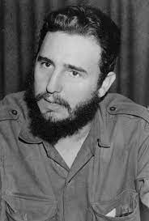

Fidel Alejandro Castro Ruz
A revolution is a struggle to the death between the future and the past.

Fidel Castro, Cuban revolutionary and politician.
Timeline of Fidel Castro's life:
As a Marxist, Castro sought to transform Cuba from a capitalist state which was dominated by foreign imperialism to a socialist society and
ultimately to a communist society.
Newsletter Subscription